HUMAN ACTIVITY RECOGNITION USING SMARTPHONES
PAPER - CS660
GROUP - 22
A PROJECT ON MACHINE LEARNING BY PINKI PRADHAN
INTRODUCTION
A variety of real time sensing applications are becoming available , especially in the life logging , fitness domains. These applications use mobile sensors embedded in smartphones to recognise human activities in order to get a better understanding of human behaviour.
HAR system is required to recognize six basic human activities such as walking,jogging,moving upstairs,downstairs,running,sleeping by training a supervised learning model and displaying activities result as per input received from our accelerometer sensor and CNN model.
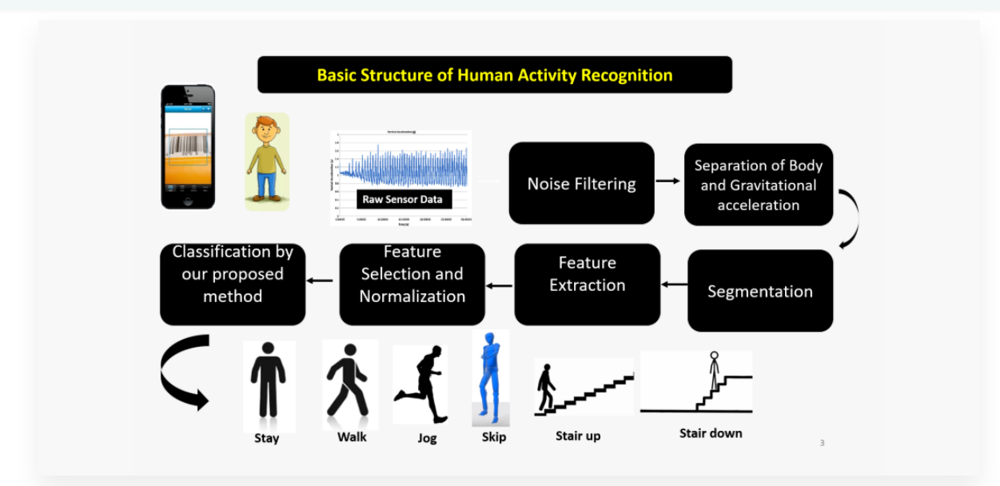
HRA has wide application in medical resrarch and human survey system.Here we will design a robust activity recognition system based on smartphone.The system uses 3 dimensional smartphone accelerometer as the only sensor to collect data from which features will be generated in both time and frequency domain.
Consider the below figure where different axes that is x,y and z axes of accelerometer sensors in different directions are shown and these axes change their directions according to the rotation of phone. So if anyone having a smartphone performs some activities then direction of these 3-axes will change accordingly.Then by observing these different values of accelerometer axes we can predict different type of activities performed by that person.

MOTIVATION
A Human Recognition System has various approaches, such as vision-based and
sensor-based, which further categorized into wearables, object-tagged, dense sensing,
etc. Before moving further, there also exist some design issues in HAR systems, such
as selection of different types of sensors, data collection related set of rules, recognition
performance, how much energy is consumed, processing capacity, and flexibility .
Keeping all these parameters in mind, it is important to design an efficient and lightweight
human activity recognition model. A network for mobile human activity recognition has
been proposed using long-short term memory approach for human activity recognition
using triaxial accelerometers data.
BACKGROUND
The first HAR approach contains a large number of sensor type technologies that can be worn on-body known as wearable sensors, ambient sensors, and,
together, both will make hybrid sensors that help in measuring quantities of human
body motion. Various opportunities can be provided by these sensor technologies
which can improve the robustness of the data through which human activities can be
detected and also provide the services based on sensed information from real-time
environments, such as cyber-physical-social systems there is also a type of magnetic senors when embedded in smartphone can track the positioning without any
extra cost.
2. Vision-based—RGB video and depth cameras being used to obtain human actions.
3. Multimodal—Sensors data and visual data are being used to detect human activities
Project proposal and plan
Idea for this project is 1st to collect data then some preprocessing is to be done on raw collected data.After balancing and standardizing it i will plot it on scatter plot by using matplot library.Then by using these graphs frame preparation is to be done.After that CNN model will be used to classify human activities.Then for accuracy measurement learning curve and confusion matrix will be plotted.
Week
Goal
Comments
Updates/Status
Week 4
Project Proposal
Project proposal presentation
Done
Week 5
Data Collection
Collection of sensor based WISDM dataset
Done
Week 6-8
frame preparation
Visualisation and frame preparation
Done
Week 8
model implementation
CNN , RNN-LSTM models implementation
Implementation done
Week 9-11
Transition recognition
Different type of transition of activities recognition by LSTM
Done
Week 12-13
Submission
Final presentation and report submission
Done
DATASET
DATA SOURCES
I will be using datasets in my projest from this given below site.
Source : WISDM dataset
This dataset contains nearly 10,98,206 records collected from 33 users having 6 different types of activities.
MIDWAY TARGET
BY Midway i will try to cover upto
1. collection of datasets
2. Balancing data sets
3. Standardizing datasets
4. Frame preparation
5. Understanding how to implement CNN
6. Implementation of 2D CNN(if time permits)
AFTER MIDWAY
1.Implementing CNN model(if not done by midway)
2.plotting learning curve
3.Confusion matrix
4.All possible improvements
5.Report writing
MIDWAY PROJECT PRESENTATION
RELATED PAPERS
Related papers that I am going to elaborate here are given below:
Parer 1: Wearable Sensor-Based Human Activity Recognition Using Hybrid Deep Learning Techniques
Paper 2:A lightweight deep learning model for human activity recognition on edge devices
INTRO OF PAPER 1
Human behavior recognition (HAR) is the detection, interpretation, and recognition of human behaviors, which can use smart heath care to actively assist users according to their needs. Human behavior recognition has wide application prospects, such as monitoring in smart homes, sports, game controls, health care, elderly patients care, bad habits detection, and identification. It plays a significant role in depth study and can make our daily life become smarter, safer, and more convenient. This work proposes a deep learning based scheme that can recognize both specific activities and the transitions between two different activities of short duration and low frequency for health care applications.
DATASETS USED IN THIS PAPER
This paper adopts the international standard Data Set, Smart phone Based Recognition of Human Activities and Postural Transitions Data Set to conduct an experiment, which is abbreviated as HAPT Data Set. The data set is an updated version of the UCI Human Activity Recognition Using popularity Data set . It provides raw data from smart phone sensors rather than preprocessed data and collect data from accelerometer and gyroscope sensor. In addition, the action category has been expanded to include transition actions. The HAPT data set contains twelve types of actions.Total 815,614 valid pieces of data are used here.
PROPOSED METHOD
The overall architecture diagram of the method proposed in this paper is shown in Figure , which contains three parts. The first part is the preprocessing and transformation of the original data, which combines the original data such as acceleration and gyroscope into an image-like two-dimensional array. The second part is to input the composite image into a three-layer CNN network that can automatically extract the motion features from the activity image and abstract the features, then map them into the feature map. The third part is to input the feature vector into the LSTM model, establish a relationship between time and action sequence, and finally introduce the full connection layer to achieve the fusion of multiple features. In addition, Batch Normalization (BN) is introduced , in which BN can normalize the data in each layer and finally send it to the Softmax layer for action classification.
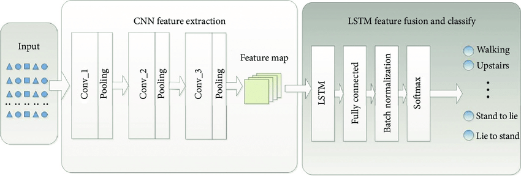
ANALYSIS OF PAPER 1
JUSTIFICATION OF THE METHOD USED
Why data from sensors are used?
Human behaviour data can be acquired from computer vision.But the vision based approaches have many limitations in practice.For example the use of a camera is limited by various factors, such as light, position,angle,potential obstacles and privacy invasion issues, which make it difficult to be restricted in practical applications.
But if we use sensors are more reliable. But in case of sensors, these wearable sensors are small in size, high in sensitivity, strong in antiinterference ability and most importantly they are integrated with our mobile phones and these sensors can accurately estimate the current acceleration and angular velocities of motion sensors in real time.
So the sensor based behaviour recognition is not limited by scene or time which can better reflect the nature of human activities.
Therefore the research and application of human behaviour recognition based on sensors are more variable and significant.
Why CNN?
CNN follows a hierarchical model which works on building a network , like a funnel and finally gives out a fully connected layer where all the networks are connected to each other and output is processed.
The main advantages of CNN compared to other neural network is that it automatically detects the important features without any human supervision.
Little dependence on preprocessing and it is easy to understand and fast to implement.It has the highest accuracy among all algorithms that predict image.
Why LSTM?
LSTM is used here to establish recognition models to capture time relations in input sequences and could acheive more accurate recognition.
This work proposes a deep learning based scheme that can recognize both specific activities and the transitions between two different activities of short duration and low frequency for health care applications.
As LSTM is capable to recognise sequences of inputs, by using LSTM we can recognise transitions between two different activities of short duration means we can recognise transition from standing to sitting,sitting to walking like this.
INTRO OF PAPER 2:
Here the architecture for proposed Lightweight model is developed using Shallow Recurrent Neural Network (RNN) combined with Long Short Term Memory (LSTM) deep learning algorithm.
then the model is trained and tested for six HAR activities on resource constrained edge device like RaspberryPi3, using optimized parameters.
Experiment is conducted to evaluate efficiency of the proposed model on WISDM dataset containing
sensor data of 29 participants performing six daily activities: Jogging, Walking, Standing, Sitting, Upstairs, and
Downstairs.And lastly performance of the model is measured in terms of accuracy, precision, recall, f-measure, and confusion
matrix and is compared with certain previously developed models.
DATASET DESCRIPTION
Here Android smartphone having in built accelerometer is used to capture tri-axial data . The dataset consist of six
activities performed by 29 subjects. These activities include, walking, upstairs, downstairs, jogging, upstairs, standing,
and sitting. Each subject performed different activities carrying cell phone in front leg pocket. Constant Sampling rate
of 20 Hz was set for accelerometer sensor. The detailed description of dataset is given in the table 1 below.
Total no of samples: 1,098,207
Total no of subjects: 29
Activity Samples : Percentage
Walking 4,24,400 38.6%
Jogging 3,42,177 31.2%
Upstairs 1,22,869 11.2%
Downstairs 1,00,427 9.1%
Sitting 59,939 5.5%
Standing 48,397 4.4%
PROPOSED METHOD
The working of Lightweight RNN-LSTM based HAR system for edge devices is shown in below figure. The accelerometer
reading is partitioned into fix window size T. The input to the model is a set of readings (x1, x2, x3,…….,xT-1, xT)
captured in time T, where xt is the reading captured at any time instance t. This segmented window is readings are
then fed to Lightweight RNN-LSTM model. The model uses sum of rule and combine output from different states
using softmax classifier to one final output of that particular window as oT.
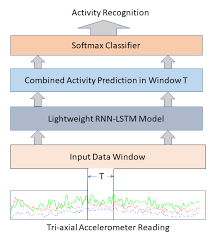
ANALYSIS OF PAPER 2:
JUSTIFICATION OF METHOD USED
WHY RNN-LSTM?
=>In previous paper they are using CNN-LSTM but here RNN-LSTM is used.RNNs are capable of capturing temporal information from sequential data. It consists of input, hidden, and output layer.Hidden layer consist of multiple nodes.
=>RNN networks suffer from the problem of exploding and vanishing gradient. This hinders the ability of network to
model wide-range temporal dependencies between input readings and human activities for long context windows.
RNNs based on LSTM can eliminate this limitation, and can model long activity windows by replacing traditional
RNN nodes with LSTM memory cells.So here RNN is used for Activity recognition and LSTM is used to recognise different types of transition of activations.
Works done in paper 1 and paper 2 is almost same.Only in paper 1 they are using CNN-LSTM model where in paper 2 RNN-LSTM is used.And the dataset used earlier is HAPT(Human Activities and Postural Transitions) Dataset
having 815,614 records and 12 columns and have both accelerometer and gyroscope values.But in paper 2 they are using WISDM(Wireless Sensor Data Mining) datasets which have 1,098,207 records and 6 columns having only accelerometer values.
BASELINE IMPLEMENTATION:
First I collected my dataset, after extracting that dataset what i saw that dataset was in so unstructured format.Then i tried to convert into structured format but as my dataset is very huge i couldnot make it structurd by using only python and pandas.Then I tried MS Access and after using some other statistical tools i finally converted that to a proper structured format.
Then I tried to import that dataset in my jupyter notebook but I faced a lot of trouble while importing that dataset. So I switched to Google Colab and I stored that dataset on google drive because google colab has all the limitations that after 12
hours all the data will be deleted and we need to restore that again and again.
Libraries that i have used in my project:
1.Pandas for loading dataset
2.Numpy for performing neumerical computation
3.Matplotlib for plotting
4.Pickle to serialize the object for permanent storage
5.Scipy for different scintific computation and statistical functions
6.Tensorflow for creating different neural networks
7.Seaborn for beautifying graphs
8.Sklearn for training and testing splitting of data and for the matrics that I will be using to judge my model.
DATA EXPLORATION
This is the summary of dataset that i have used.This dataset contains 6 activities having nearly 11 lakhs record.
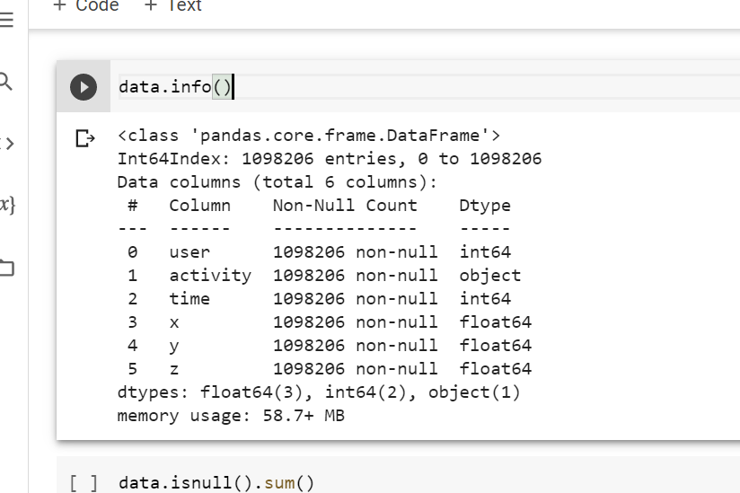
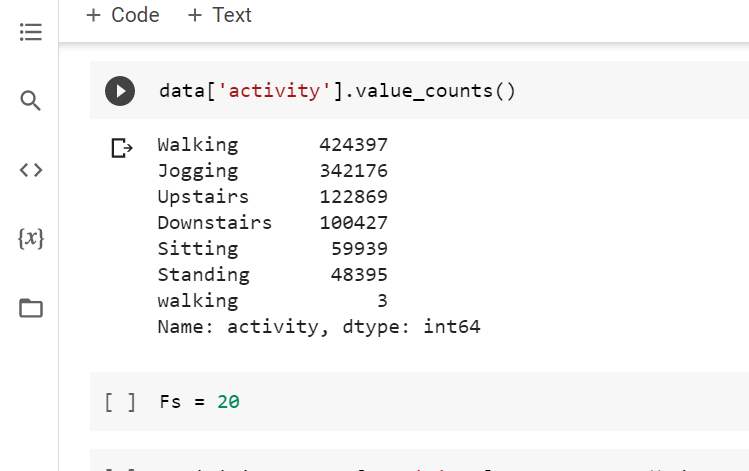
From this righthand side snapshot we can see that this dataset contains highly unbalanced data.Means here walking and jogging have more no of records i.e. 424397 and 342176 records respectively while standing has 48395 records only.If we use this dataset as then it is going to highly overfitted and skewed towards walking and jogging.
So We need to balance the dataset, for that what I did I took only 3555 records from each activity.
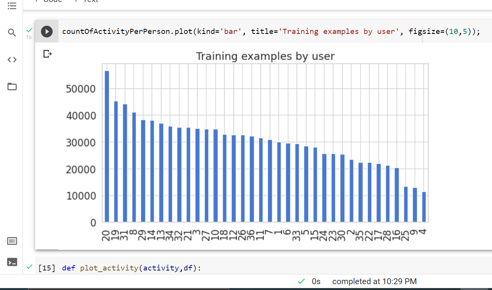
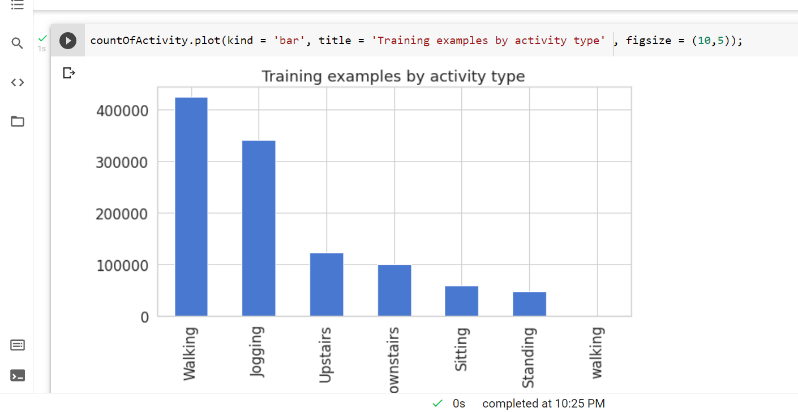
Then I plotted a graph which shows how many records belong to each activity in the form of a bar graph.Here 1st graph is activities vs no of records.Then I plotted activities in perspective of users means how much records belong to each user.Second graph is a user number vs no of records belong to each user.
VISUALISING ACCELEROMETER DATA
After exploring dataset I tried to plot these accelerometer values for timestamp 10sec so that we can see how the accelerometer data looks visually for each activity.
Because each activity follow a specific pattern and by looking at these patterns we can classify which accelerometer values belongs which class. From below figure we can see that, for walking and jogging there is a lots of variation in pattern but for sitting pattern is almost flat.
So what my model should learn if there is more variation in pattern then that will be classified into jogging and if there is less of variation that should be classified as sitting.
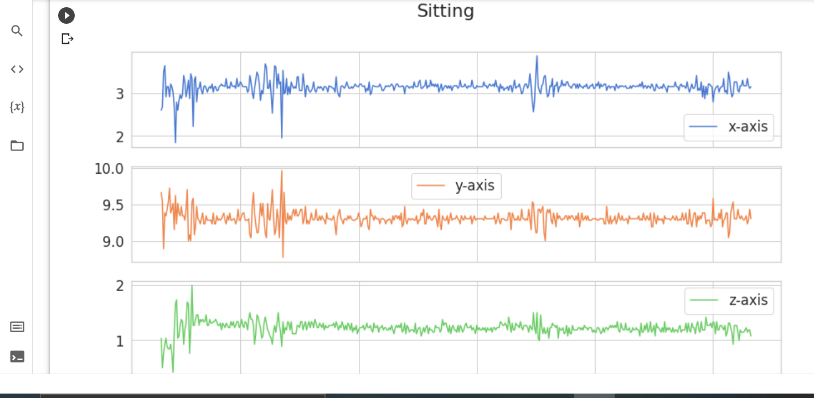
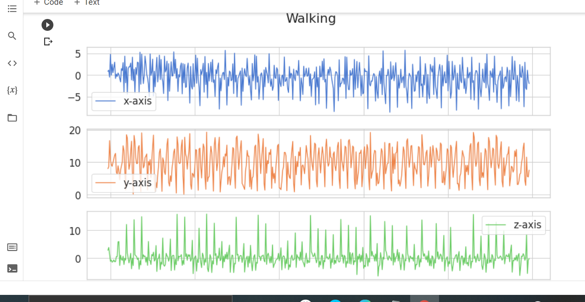
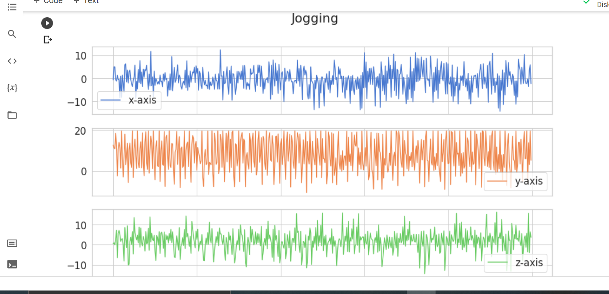
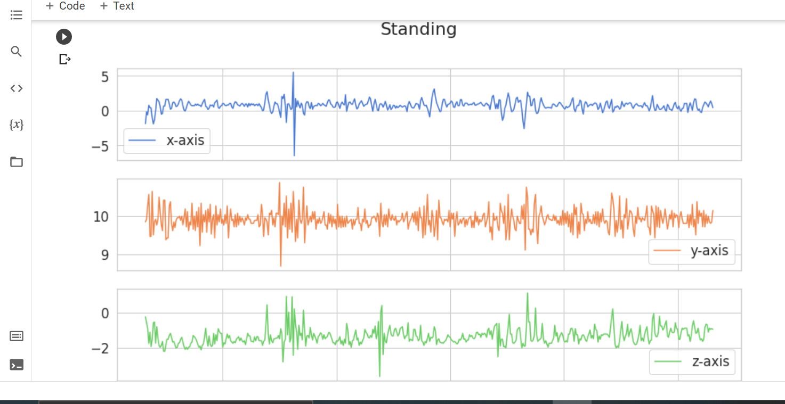
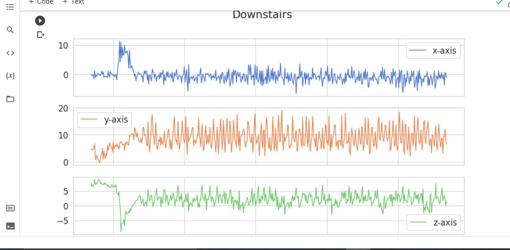
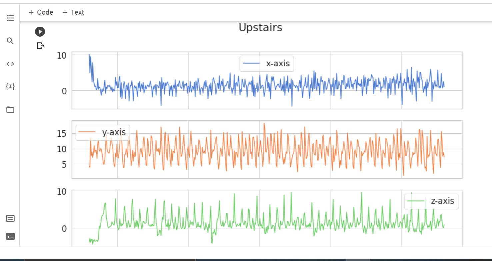
FRAME PREPARATION
From frame preparation we need to import scipy stats.Here for 1sec timestamp Frame size is 20.So for 4sec we will take 80 data items.Initial overall data that will be feeding our neural network is 80*3 i.e. 240. Hopsize is twice of framesize.Hopsize means suppose we have taken 80 data samples and then for next time we want to take the next 80 samples onwards or do we want some overlapping.Here I am taking 80 data samples initially and making advancement for 40 data samples.For 4sec of data we will consider the level which comes most number of times that can be done by calculating mode.Then level of these 4sec data will be given having highest no of mode.
IMPLEMENTATION OF CNN MODEL
Here I have called sequential layer 1st . In 1st layer I have added 2-dimensional convolution layer that is Con2D . Then 16 filters are passed having [2,2] kernel size and activation function relu is used . For 1st layer input shape is x-train . Then I added dropout layer means randomly 0.1 or 10% neurons have been dropped . The another layer of CNN having 32 layers and size of [2,2] with activation function relu is added . In hidden Convolution layer we don't need to provide input shapes because it automatically matches this preceeding layers. Then 20% dropout will be added . Then add flatten then dense layer having 64 and activation function relu and drop 50% neuron randomly . Then add final layer . As we need 6 classes and it is a multi class classification we are taking softmax as activation function.For compilation Adam optimizer is used and loss function is sparse categorial cross entropy.Then training process will start.I kept this in history of model training. I took number of epoch is 10.
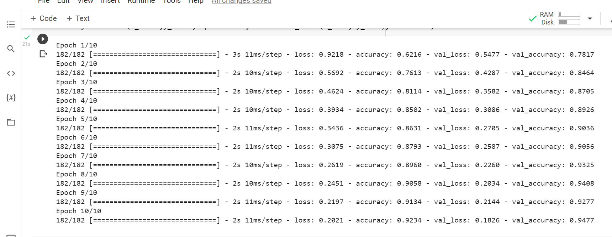
After implementing this model earlier I was getting 81.23% training accuracy and 81.77% testing accuracy . Then I tried adjusting frame size and Hopsize . Then by changing it repeatedly, for frame size 300sec and hopsize 40 I got highestet percentage of training accuracy and testing accuracy but model was overfitted and loss was very high . But for frame size 80sec and Hopsize 40 I got training accuracy of 92.34% and testing accuracy of 94.77% and loss was too low.
Then here are the images of learning curve. 1st graph is plotted between no of epochs and accuracy of model.Then the 2nd graph is plotted between no of epochs and loss of model. Here we got quite good accuracy . As validation loss is less than training loss we can say that our model is neither overfiting and nor underfitting .
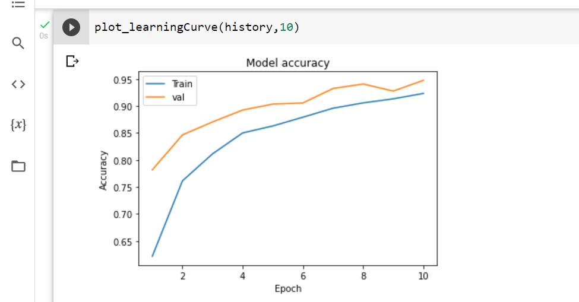
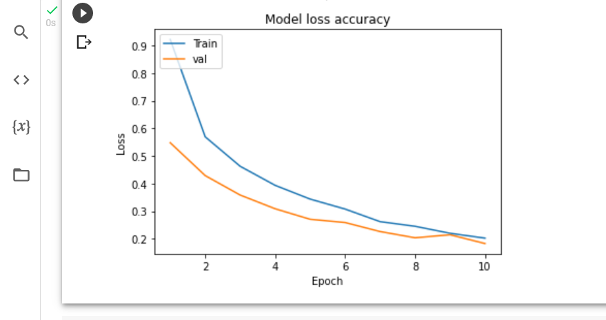
RNN-LSTM IMPLEMENTATION
I have implemented RNN-LSTM model using tensorflow . This model consists of 2 LSTM layer stack one after another having 64 units each and the activation function for LSTM and hidden layer is relu and for output layer is Softmax . We have to find out 1 out of 6 different outcome possible using the output layer . 1st I initialised weight and biases then I have transposed and reshaped the input for betterly able feed into the model . After this dataset was splitted into multiple dataset containing 200 datapoints each.
Then i created 2 LSTM layer back to back stack after another and easily we are returning output of the whole RNN we are computing and returning it here . Then I have set L2 regularisation and as well as loss function . L2 regularisation for preventing our model to overfitting and loss function is simply cross entropy loss . Learning rate is 0.0025 and optimiser I used is Adam optimiser .Then I train my model for 50 epochs . Then I created a session so that training process will start and display our result .
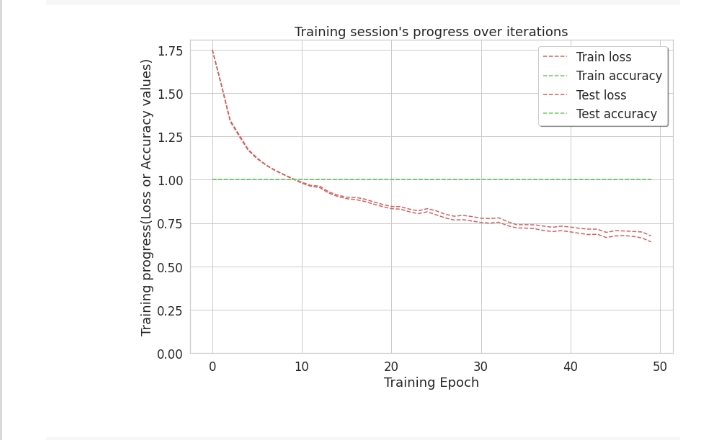
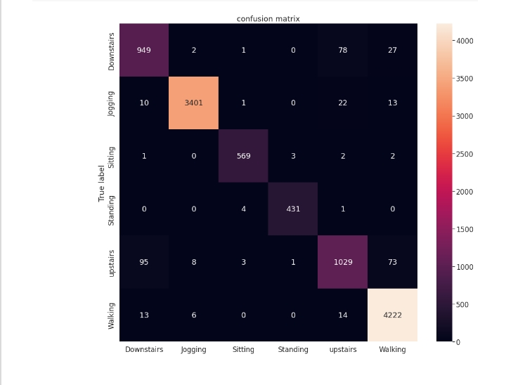
After 50 epochs I got train and test accuracy of 100% with test loss 0.675827622413635 and training loss is 0.6414243578910828 . From the learning curve we can see that as number of epochs increases train loss and test loss decreses gradually .From epoch 1 train and testing acuracy is 1.
Then here is snapshot of confusion matrix . Here our model is a little bit confused between upstairs and downstairs .
IMPROVEMENTS
A variety of real time sensing applications are becoming available , especially in the life logging , fitness domains. These applications use mobile sensors embedded in smartphones to recognise human activities in order to get a better understanding of human behaviour.
HAR system is required to recognize six basic human activities such as walking,jogging,moving upstairs,downstairs,running,sleeping by training a supervised learning model and displaying activities result as per input received from our accelerometer sensor and CNN model.
HRA has wide application in medical resrarch and human survey system.Here we will design a robust activity recognition system based on smartphone.The system uses 3 dimensional smartphone accelerometer as the only sensor to collect data from which features will be generated in both time and frequency domain.
Consider the below figure where different axes that is x,y and z axes of accelerometer sensors in different directions are shown and these axes change their directions according to the rotation of phone. So if anyone having a smartphone performs some activities then direction of these 3-axes will change accordingly.Then by observing these different values of accelerometer axes we can predict different type of activities performed by that person.
MOTIVATION
A Human Recognition System has various approaches, such as vision-based and sensor-based, which further categorized into wearables, object-tagged, dense sensing, etc. Before moving further, there also exist some design issues in HAR systems, such as selection of different types of sensors, data collection related set of rules, recognition performance, how much energy is consumed, processing capacity, and flexibility . Keeping all these parameters in mind, it is important to design an efficient and lightweight human activity recognition model. A network for mobile human activity recognition has been proposed using long-short term memory approach for human activity recognition using triaxial accelerometers data.
BACKGROUND
The first HAR approach contains a large number of sensor type technologies that can be worn on-body known as wearable sensors, ambient sensors, and, together, both will make hybrid sensors that help in measuring quantities of human body motion. Various opportunities can be provided by these sensor technologies which can improve the robustness of the data through which human activities can be detected and also provide the services based on sensed information from real-time environments, such as cyber-physical-social systems there is also a type of magnetic senors when embedded in smartphone can track the positioning without any extra cost. 2. Vision-based—RGB video and depth cameras being used to obtain human actions. 3. Multimodal—Sensors data and visual data are being used to detect human activities
Idea for this project is 1st to collect data then some preprocessing is to be done on raw collected data.After balancing and standardizing it i will plot it on scatter plot by using matplot library.Then by using these graphs frame preparation is to be done.After that CNN model will be used to classify human activities.Then for accuracy measurement learning curve and confusion matrix will be plotted.
| Week | Goal | Comments | Updates/Status |
|---|---|---|---|
| Week 4 | Project Proposal | Project proposal presentation | Done |
| Week 5 | Data Collection | Collection of sensor based WISDM dataset | Done |
| Week 6-8 | frame preparation | Visualisation and frame preparation | Done |
| Week 8 | model implementation | CNN , RNN-LSTM models implementation | Implementation done |
| Week 9-11 | Transition recognition | Different type of transition of activities recognition by LSTM | Done |
| Week 12-13 | Submission | Final presentation and report submission | Done |
DATA SOURCES
I will be using datasets in my projest from this given below site.
Source : WISDM dataset
This dataset contains nearly 10,98,206 records collected from 33 users having 6 different types of activities.
BY Midway i will try to cover upto
1. collection of datasets
2. Balancing data sets
3. Standardizing datasets
4. Frame preparation
5. Understanding how to implement CNN
6. Implementation of 2D CNN(if time permits)
AFTER MIDWAY
1.Implementing CNN model(if not done by midway)
2.plotting learning curve
3.Confusion matrix
4.All possible improvements
5.Report writing
RELATED PAPERS
Related papers that I am going to elaborate here are given below:
Parer 1: Wearable Sensor-Based Human Activity Recognition Using Hybrid Deep Learning Techniques
Paper 2:A lightweight deep learning model for human activity recognition on edge devices
INTRO OF PAPER 1
Human behavior recognition (HAR) is the detection, interpretation, and recognition of human behaviors, which can use smart heath care to actively assist users according to their needs. Human behavior recognition has wide application prospects, such as monitoring in smart homes, sports, game controls, health care, elderly patients care, bad habits detection, and identification. It plays a significant role in depth study and can make our daily life become smarter, safer, and more convenient. This work proposes a deep learning based scheme that can recognize both specific activities and the transitions between two different activities of short duration and low frequency for health care applications.
DATASETS USED IN THIS PAPER
This paper adopts the international standard Data Set, Smart phone Based Recognition of Human Activities and Postural Transitions Data Set to conduct an experiment, which is abbreviated as HAPT Data Set. The data set is an updated version of the UCI Human Activity Recognition Using popularity Data set . It provides raw data from smart phone sensors rather than preprocessed data and collect data from accelerometer and gyroscope sensor. In addition, the action category has been expanded to include transition actions. The HAPT data set contains twelve types of actions.Total 815,614 valid pieces of data are used here.
PROPOSED METHOD
The overall architecture diagram of the method proposed in this paper is shown in Figure , which contains three parts. The first part is the preprocessing and transformation of the original data, which combines the original data such as acceleration and gyroscope into an image-like two-dimensional array. The second part is to input the composite image into a three-layer CNN network that can automatically extract the motion features from the activity image and abstract the features, then map them into the feature map. The third part is to input the feature vector into the LSTM model, establish a relationship between time and action sequence, and finally introduce the full connection layer to achieve the fusion of multiple features. In addition, Batch Normalization (BN) is introduced , in which BN can normalize the data in each layer and finally send it to the Softmax layer for action classification. 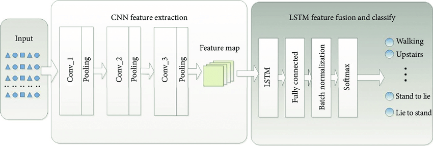
ANALYSIS OF PAPER 1
JUSTIFICATION OF THE METHOD USED
Why data from sensors are used?
Human behaviour data can be acquired from computer vision.But the vision based approaches have many limitations in practice.For example the use of a camera is limited by various factors, such as light, position,angle,potential obstacles and privacy invasion issues, which make it difficult to be restricted in practical applications.
But if we use sensors are more reliable. But in case of sensors, these wearable sensors are small in size, high in sensitivity, strong in antiinterference ability and most importantly they are integrated with our mobile phones and these sensors can accurately estimate the current acceleration and angular velocities of motion sensors in real time.
So the sensor based behaviour recognition is not limited by scene or time which can better reflect the nature of human activities.
Therefore the research and application of human behaviour recognition based on sensors are more variable and significant.
Why CNN?
CNN follows a hierarchical model which works on building a network , like a funnel and finally gives out a fully connected layer where all the networks are connected to each other and output is processed.
The main advantages of CNN compared to other neural network is that it automatically detects the important features without any human supervision.
Little dependence on preprocessing and it is easy to understand and fast to implement.It has the highest accuracy among all algorithms that predict image.
Why LSTM?
LSTM is used here to establish recognition models to capture time relations in input sequences and could acheive more accurate recognition.
This work proposes a deep learning based scheme that can recognize both specific activities and the transitions between two different activities of short duration and low frequency for health care applications.
As LSTM is capable to recognise sequences of inputs, by using LSTM we can recognise transitions between two different activities of short duration means we can recognise transition from standing to sitting,sitting to walking like this.
INTRO OF PAPER 2:
Here the architecture for proposed Lightweight model is developed using Shallow Recurrent Neural Network (RNN) combined with Long Short Term Memory (LSTM) deep learning algorithm. then the model is trained and tested for six HAR activities on resource constrained edge device like RaspberryPi3, using optimized parameters. Experiment is conducted to evaluate efficiency of the proposed model on WISDM dataset containing sensor data of 29 participants performing six daily activities: Jogging, Walking, Standing, Sitting, Upstairs, and Downstairs.And lastly performance of the model is measured in terms of accuracy, precision, recall, f-measure, and confusion matrix and is compared with certain previously developed models.
DATASET DESCRIPTION
Here Android smartphone having in built accelerometer is used to capture tri-axial data . The dataset consist of six
activities performed by 29 subjects. These activities include, walking, upstairs, downstairs, jogging, upstairs, standing,
and sitting. Each subject performed different activities carrying cell phone in front leg pocket. Constant Sampling rate
of 20 Hz was set for accelerometer sensor. The detailed description of dataset is given in the table 1 below.
Total no of samples: 1,098,207
Total no of subjects: 29
Activity Samples : Percentage
Walking 4,24,400 38.6%
Jogging 3,42,177 31.2%
Upstairs 1,22,869 11.2%
Downstairs 1,00,427 9.1%
Sitting 59,939 5.5%
Standing 48,397 4.4%
PROPOSED METHOD
The working of Lightweight RNN-LSTM based HAR system for edge devices is shown in below figure. The accelerometer
reading is partitioned into fix window size T. The input to the model is a set of readings (x1, x2, x3,…….,xT-1, xT)
captured in time T, where xt is the reading captured at any time instance t. This segmented window is readings are
then fed to Lightweight RNN-LSTM model. The model uses sum of rule and combine output from different states
using softmax classifier to one final output of that particular window as oT.
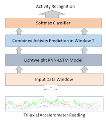
ANALYSIS OF PAPER 2:
JUSTIFICATION OF METHOD USED
WHY RNN-LSTM?
=>In previous paper they are using CNN-LSTM but here RNN-LSTM is used.RNNs are capable of capturing temporal information from sequential data. It consists of input, hidden, and output layer.Hidden layer consist of multiple nodes.
=>RNN networks suffer from the problem of exploding and vanishing gradient. This hinders the ability of network to
model wide-range temporal dependencies between input readings and human activities for long context windows.
RNNs based on LSTM can eliminate this limitation, and can model long activity windows by replacing traditional
RNN nodes with LSTM memory cells.So here RNN is used for Activity recognition and LSTM is used to recognise different types of transition of activations.
Works done in paper 1 and paper 2 is almost same.Only in paper 1 they are using CNN-LSTM model where in paper 2 RNN-LSTM is used.And the dataset used earlier is HAPT(Human Activities and Postural Transitions) Dataset having 815,614 records and 12 columns and have both accelerometer and gyroscope values.But in paper 2 they are using WISDM(Wireless Sensor Data Mining) datasets which have 1,098,207 records and 6 columns having only accelerometer values.
First I collected my dataset, after extracting that dataset what i saw that dataset was in so unstructured format.Then i tried to convert into structured format but as my dataset is very huge i couldnot make it structurd by using only python and pandas.Then I tried MS Access and after using some other statistical tools i finally converted that to a proper structured format.
Then I tried to import that dataset in my jupyter notebook but I faced a lot of trouble while importing that dataset. So I switched to Google Colab and I stored that dataset on google drive because google colab has all the limitations that after 12
hours all the data will be deleted and we need to restore that again and again.
Libraries that i have used in my project:
1.Pandas for loading dataset
2.Numpy for performing neumerical computation
3.Matplotlib for plotting
4.Pickle to serialize the object for permanent storage
5.Scipy for different scintific computation and statistical functions
6.Tensorflow for creating different neural networks
7.Seaborn for beautifying graphs
8.Sklearn for training and testing splitting of data and for the matrics that I will be using to judge my model.
DATA EXPLORATION
This is the summary of dataset that i have used.This dataset contains 6 activities having nearly 11 lakhs record.
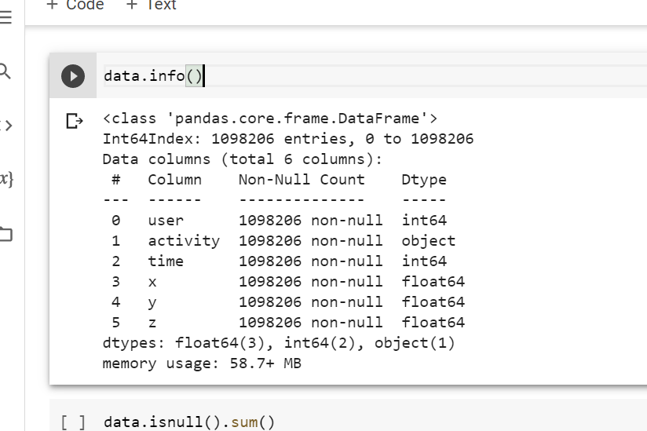 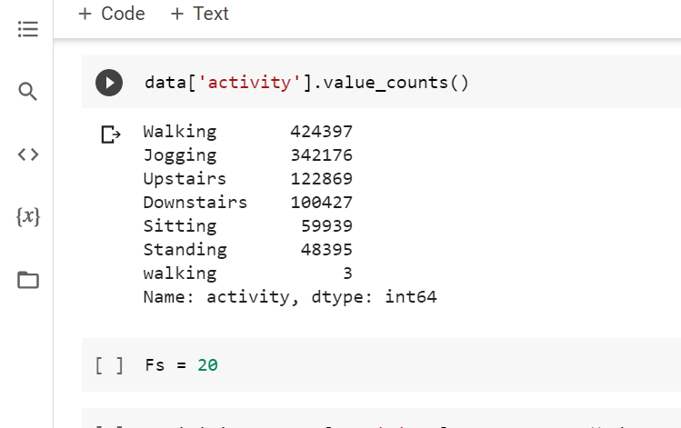From this righthand side snapshot we can see that this dataset contains highly unbalanced data.Means here walking and jogging have more no of records i.e. 424397 and 342176 records respectively while standing has 48395 records only.If we use this dataset as then it is going to highly overfitted and skewed towards walking and jogging. So We need to balance the dataset, for that what I did I took only 3555 records from each activity.
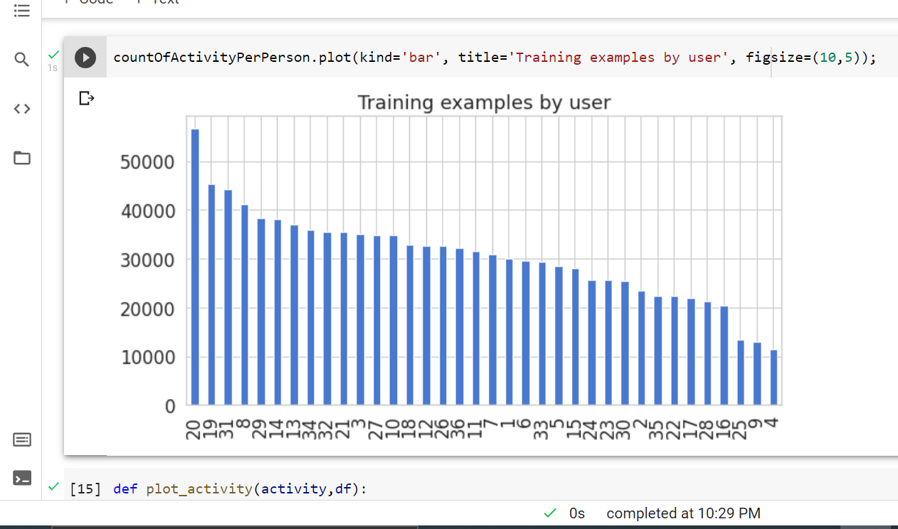 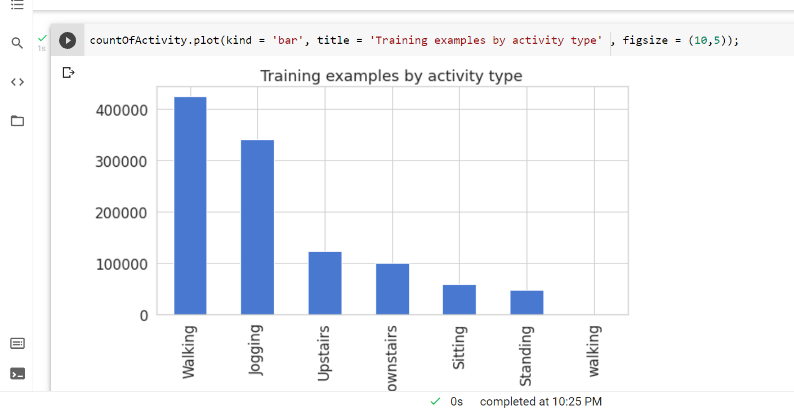
Then I plotted a graph which shows how many records belong to each activity in the form of a bar graph.Here 1st graph is activities vs no of records.Then I plotted activities in perspective of users means how much records belong to each user.Second graph is a user number vs no of records belong to each user.
VISUALISING ACCELEROMETER DATA
After exploring dataset I tried to plot these accelerometer values for timestamp 10sec so that we can see how the accelerometer data looks visually for each activity. Because each activity follow a specific pattern and by looking at these patterns we can classify which accelerometer values belongs which class. From below figure we can see that, for walking and jogging there is a lots of variation in pattern but for sitting pattern is almost flat. So what my model should learn if there is more variation in pattern then that will be classified into jogging and if there is less of variation that should be classified as sitting.
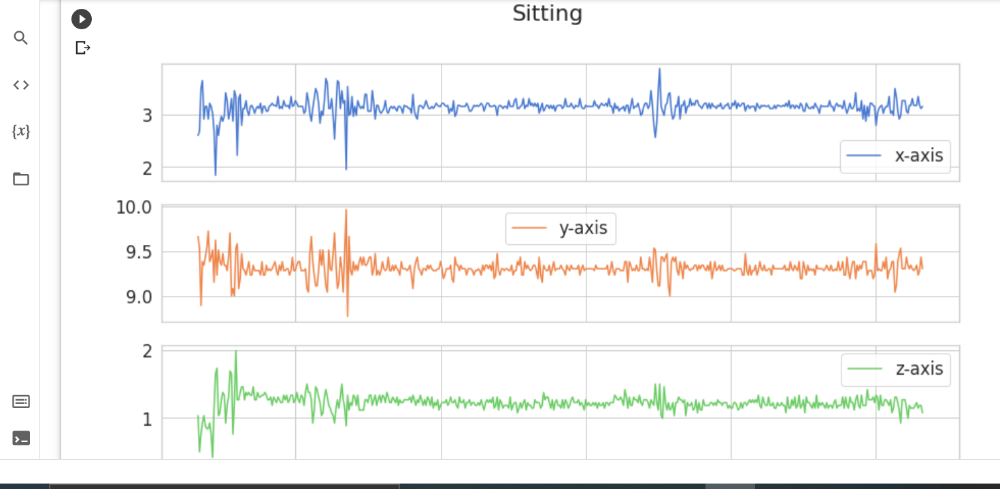 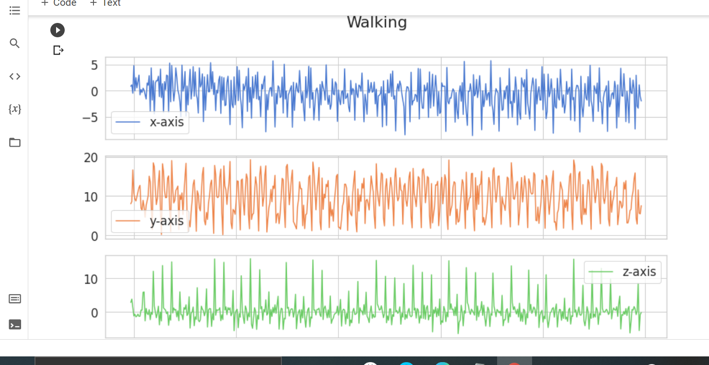 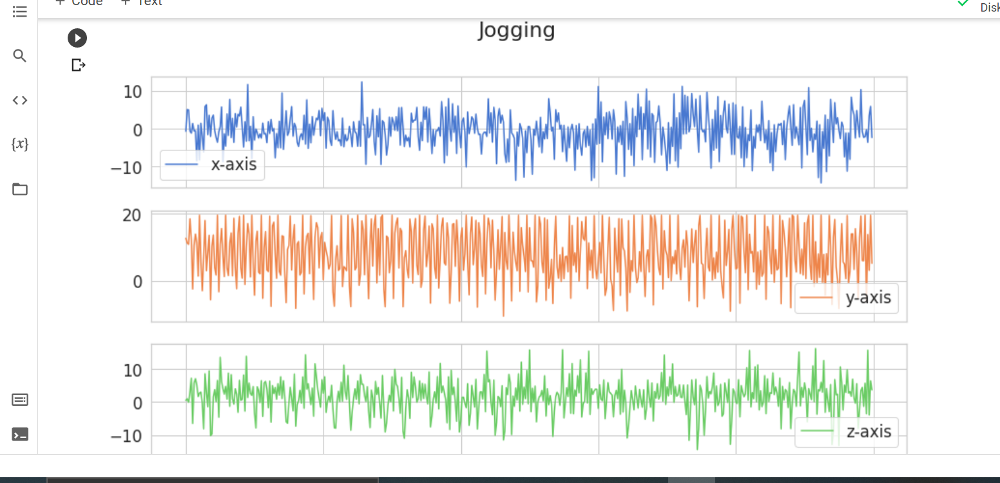 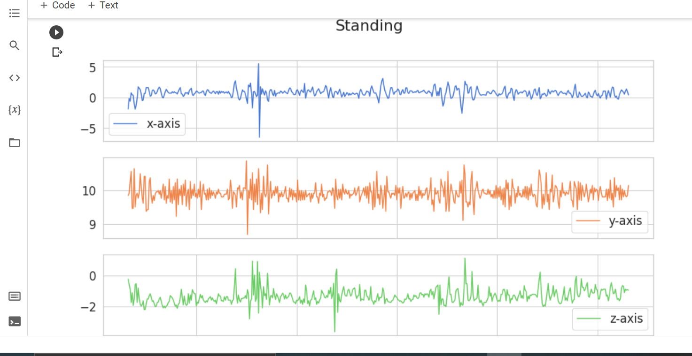 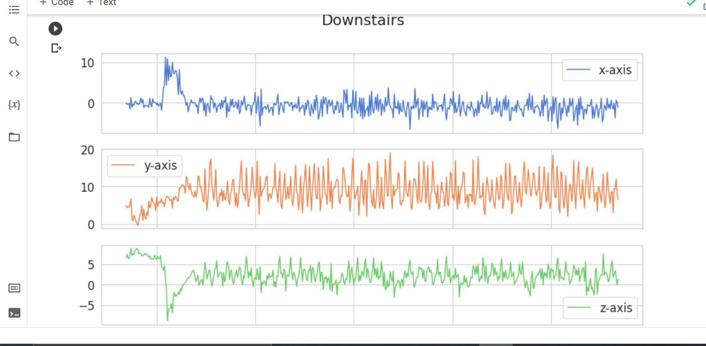 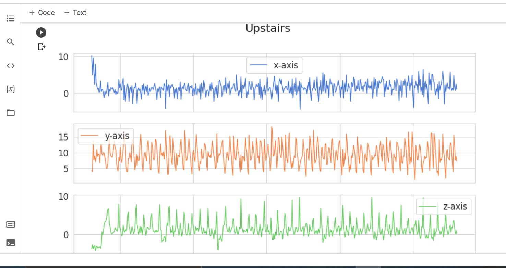
FRAME PREPARATION
From frame preparation we need to import scipy stats.Here for 1sec timestamp Frame size is 20.So for 4sec we will take 80 data items.Initial overall data that will be feeding our neural network is 80*3 i.e. 240. Hopsize is twice of framesize.Hopsize means suppose we have taken 80 data samples and then for next time we want to take the next 80 samples onwards or do we want some overlapping.Here I am taking 80 data samples initially and making advancement for 40 data samples.For 4sec of data we will consider the level which comes most number of times that can be done by calculating mode.Then level of these 4sec data will be given having highest no of mode.
IMPLEMENTATION OF CNN MODEL
Here I have called sequential layer 1st . In 1st layer I have added 2-dimensional convolution layer that is Con2D . Then 16 filters are passed having [2,2] kernel size and activation function relu is used . For 1st layer input shape is x-train . Then I added dropout layer means randomly 0.1 or 10% neurons have been dropped . The another layer of CNN having 32 layers and size of [2,2] with activation function relu is added . In hidden Convolution layer we don't need to provide input shapes because it automatically matches this preceeding layers. Then 20% dropout will be added . Then add flatten then dense layer having 64 and activation function relu and drop 50% neuron randomly . Then add final layer . As we need 6 classes and it is a multi class classification we are taking softmax as activation function.For compilation Adam optimizer is used and loss function is sparse categorial cross entropy.Then training process will start.I kept this in history of model training. I took number of epoch is 10. 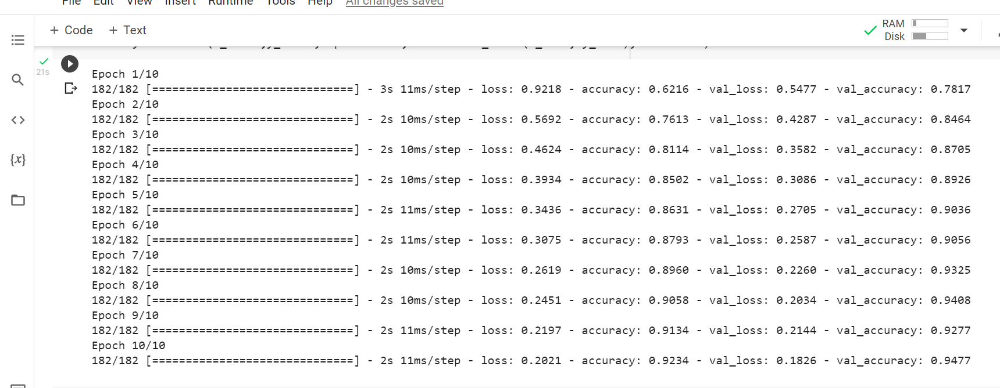After implementing this model earlier I was getting 81.23% training accuracy and 81.77% testing accuracy . Then I tried adjusting frame size and Hopsize . Then by changing it repeatedly, for frame size 300sec and hopsize 40 I got highestet percentage of training accuracy and testing accuracy but model was overfitted and loss was very high . But for frame size 80sec and Hopsize 40 I got training accuracy of 92.34% and testing accuracy of 94.77% and loss was too low.
Then here are the images of learning curve. 1st graph is plotted between no of epochs and accuracy of model.Then the 2nd graph is plotted between no of epochs and loss of model. Here we got quite good accuracy . As validation loss is less than training loss we can say that our model is neither overfiting and nor underfitting .
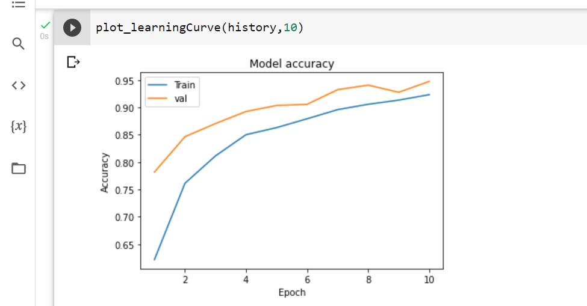 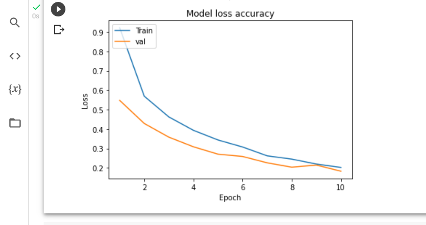RNN-LSTM IMPLEMENTATION
I have implemented RNN-LSTM model using tensorflow . This model consists of 2 LSTM layer stack one after another having 64 units each and the activation function for LSTM and hidden layer is relu and for output layer is Softmax . We have to find out 1 out of 6 different outcome possible using the output layer . 1st I initialised weight and biases then I have transposed and reshaped the input for betterly able feed into the model . After this dataset was splitted into multiple dataset containing 200 datapoints each. Then i created 2 LSTM layer back to back stack after another and easily we are returning output of the whole RNN we are computing and returning it here . Then I have set L2 regularisation and as well as loss function . L2 regularisation for preventing our model to overfitting and loss function is simply cross entropy loss . Learning rate is 0.0025 and optimiser I used is Adam optimiser .Then I train my model for 50 epochs . Then I created a session so that training process will start and display our result .
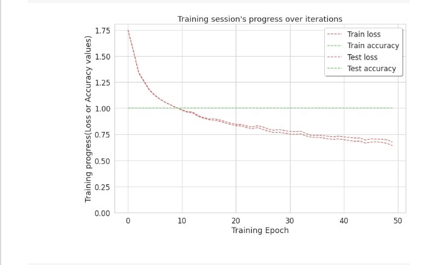
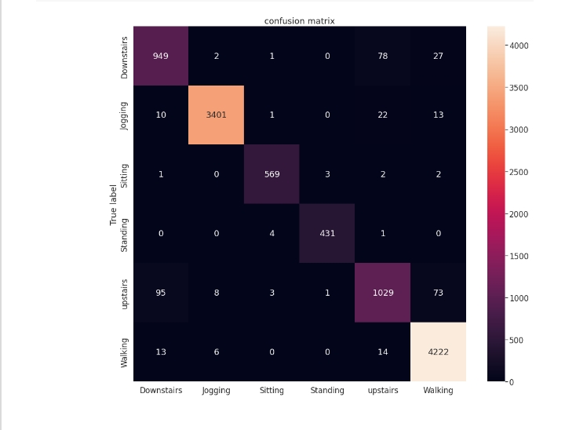
After 50 epochs I got train and test accuracy of 100% with test loss 0.675827622413635 and training loss is 0.6414243578910828 . From the learning curve we can see that as number of epochs increases train loss and test loss decreses gradually .From epoch 1 train and testing acuracy is 1.
Then here is snapshot of confusion matrix . Here our model is a little bit confused between upstairs and downstairs .
As I have mentioned earlier I tried to implement transition of activites recogntion . Transtion recognition means, suppose a person is sitting and then he changes his activities means he stands suddenly and it takes 4sec to that person to change his activity . If we consider those 4sec value of accelerometer then we can not classify that neither as standing nor as sitting . So we need to take that transition recognition into consideration. For this transition recognition I need different dataset for that because the dataset that i am currently working doesn't contain any data regarding this transition recognition . I tried searching a lot but I couldnot find any dataset which contains these transition recognition .
So I collected data from accelerometer of my phone . As recording values of sensor is quite difficult i couldnot collect much datas . I was able to collect only nearly 1000 data from myphone which contains 6 transition activities i.e Sitting to standing, Standing to sitting, Lying to sitting, Sitting to lying, Walking to sitting, Standing to lying. Then I implemented LSTM model .
I got an accuracy of 100% but the loss is a bit high.
RESULTS
- [1] IMPLEMENTATION OF CNN
- [2] IMPLEMENTATION OF RNN-LSTM
- [3] TRANSITION RECOGNITION
CONCLUSION
Actions identified in this project only include common basic actions and individual transition actions. In the next step, more kinds of actions can be collected and more complex actions can be added, such as eating and driving. And the individual recognition can be realized by considering the behavior differences of different users. Meanwhile, the deep learning model still needs to be optimized and improved. Studies show that the combination of depth model and shallow model can achieve better performance. Deep learning model has strong learning ability, while shallow learning model has higher learning efficiency. This collaboration between the two can achieve more accurate and lightweight recognition.
REFERENCES
- [1] Wearable Sensor-Based Human Activity Recognition Using Hybrid Deep Learning Techniques
- [2] A Lightweight Deep Learning Model for Human Activity Recognition on Edge Devices
- [3] Efficient dense labelling of human activity sequences from wearables using fully convolutional networks Author links open overlay panel
- [4] A Review on Human Activity Recognition Using Vision-Based Method
USING CNN MODEL
For frame size = 300sec and Hopsize = 80 ,Training Accuracy = 94.66% , Testing Accuracy = 92.42% ,Training loss = 0.1436, Testing loss = 0.9246(Overfitted)
For frame size = 200sec and Hopsize = 60 ,Training Accuracy = 94.80% , Testing Accuracy = 92.30% ,Training loss = 0.1567, Testing loss = 0.9437(Overfitted)
For frame size = 80sec and H0psize = 40 ,Training Accuracy = 91.41% , Testing Accuracy = 93.87% ,Training loss = 0.2107, Testing loss = 0.2020
USING RNN-LSTM
For datapoints = 800, Training accuracy = 100% ,Testing accuracy = 100% ,Train loss = 0.6414243578910828
, test loss = 0.6758276224136353
FOR TRANSITION RECOGNITION
final results: accuracy: 1.0 loss: 3.165830373764038
GITHUBLINK: